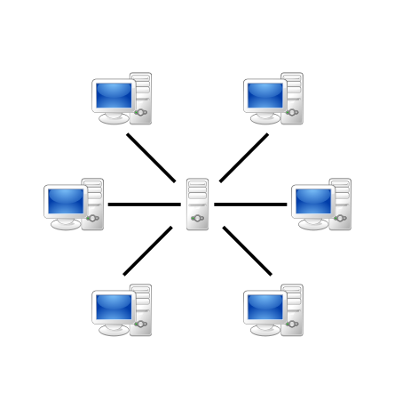

A disciplina de Arquitetura de Redes tem como principal objetivo apresentar os fundamentos, modelos, componentes e funcionamento das redes de computadores, com foco em como os sistemas se comunicam e trocam informações de forma eficiente, segura e escalável.
